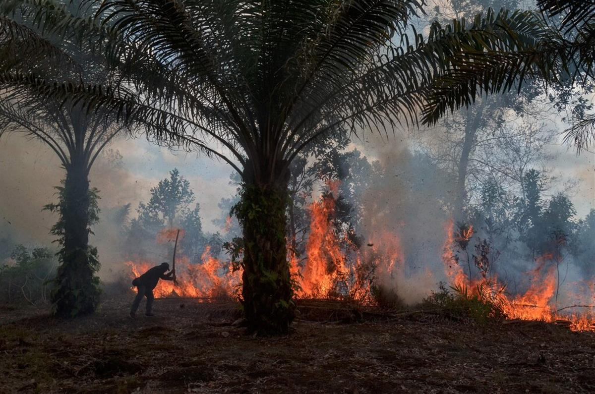

A red-fronted brown lemur in the Kirindy forest reserve near Morondava, Madagascar. Scientists said that restoring a portion of agricultural land to a wild state would not only help reduce extinctions but aid in the fight against global warming. Credit...Baz Ratner/Reuters
A red-fronted brown lemur in the Kirindy forest reserve near Morondava, Madagascar. Scientists said that restoring a portion of agricultural land to a wild state would not only help reduce extinctions but aid in the fight against global warming. Credit...Baz Ratner/Reuters
Restoring Farmland Could Drastically Slow Extinctions, Fight Climate Change
Returning strategic parts of the world’s farmlands to nature could help mitigate both climate change and biodiversity loss, a new study found.
- Oct. 14, 2020
The twin crises of climate change and biodiversity loss are intertwined: Storms and wildfires are worsening while as many as one million species are at risk of extinction.
The solutions are not small or easy, but they exist, scientists say.
A global road map, published Wednesday in Nature, identifies a path to soaking up almost half of the carbon dioxide that has built up since the Industrial Revolution and averting more than 70 percent of the predicted animal and plant extinctions on land. The key? Returning a strategic 30 percent of the world’s farmlands to nature.
It could be done, the researchers found, while preserving an abundant food supply for people and while also staying within the time scale to keep global temperatures from rising past 2 degrees Celsius, the upper target of the Paris Agreement.
“It’s one of the most cost effective ways of combating climate change,” said Bernardo B.N. Strassburg, one of the study’s authors and an environmental scientist with Pontifical Catholic University of Rio de Janeiro and the International Institute for Sustainability. “And it’s one of the most important ways of avoiding global extinctions.”
The researchers used a map from the European Space Agency that breaks down the surface of the planet into a grid of parcels classified by ecosystem: forests, wetlands, shrub lands, grasslands and arid regions. Using an algorithm they developed, the scientists evaluated which swaths, if returned to their natural states, would yield the highest returns for mitigating climate change and biodiversity loss at the lowest cost.
It was not enough simply to lay one result on top of the other. “If you really want to optimize for all three things at the same time,” Dr. Strassburg said, “that leads to a different map.”
A similar and complementary tool, The Global Safety Net, was released last month. It identifies the most strategic 50 percent of the planet to protect, filtering for rare species, high biodiversity, large mammal landscapes, intact wilderness and climate stabilization.
A growing number of campaigns seek to address the world’s environmental emergency by conserving or restoring vast swaths of the planet. The Bonn Challenge aims to restore 350 million hectares by 2030. The Campaign for Nature is pushing leaders to protect 30 percent of the planet by 2030.

An oil palm plantation fire in Pekanbaru, Sumatra, Indonesia, in 2018. Credit...Wahyudi/Agence France-Presse — Getty ImagesIn the latest study, the scientists found that benefits rise and fall depending on how much land is restored.
Relinquishing 15 percent of strategic farmlands, for example, could spare 60 percent of extinctions and sequester about 30 percent of the built up carbon in the atmosphere. The authors estimate that at the global level, 55 percent of farmland could be returned to nature while maintaining current levels of food production by using existing agricultural land more effectively and sustainably.
“It’s really impressive,” said J. Leighton Reid, a specialist in ecological restoration at Virginia Tech who was not involved in the study. “The authors do a good job of acknowledging some of the limitations of the work at the same time as they’re proposing this big vision.”
The biggest challenges appear to be political will and finding the money to pay farmers to restore so much land to nature. But the authors point to the hundreds of billions or trillions of dollars per year that subsidize fossil fuels and unsustainable farming practices.
“There’s a lot of money available for investment,” said Robin Chazdon, a longtime biologist with the University of Connecticut and one of the study’s authors. “The world is invested in destruction.”
The study was requested by the United Nations Convention on Biological Diversity, a global treaty that aims to preserve biodiversity. One of the authors, David Cooper, is its deputy executive secretary.
A recent report by the convention showed that world leaders had failed to meet their last round of targets. The United States is the only state in the world, with the exception of the Vatican, that has not signed the treaty.
The study will be used to help inform global commitments at the United Nations biodiversity and climate conventions next year. But because the new study highlights nature’s disregard for national borders, it presents a diplomatic challenge.
“This lays out the much higher benefits overall if you ignore the country boundaries and just look at where these priorities are,” said Dr. Chazdon. The most strategic places are distributed very unevenly; tropical forests and wetlands, for example, hold outsized potential for carbon storage and biodiversity protection.
“Do we say, ‘We’re just going to forego all those benefits and be provincial about this?’” she asked. “Or are there ways to cooperate internationally?”
The authors note that the conservation of existing wilderness remains the most important way to protect biodiversity, and see their proposed restoration as a critical addition. Other essential steps Dr. Strassburg listed: Stopping the use of fossil fuels; reducing food, energy and plastic waste; and making sustainable choices when buying things like food, cars and clothes.
“Once consumers start changing their patterns,” he said, “companies react really quickly.”
SOURCE: NEW YORK TIMES